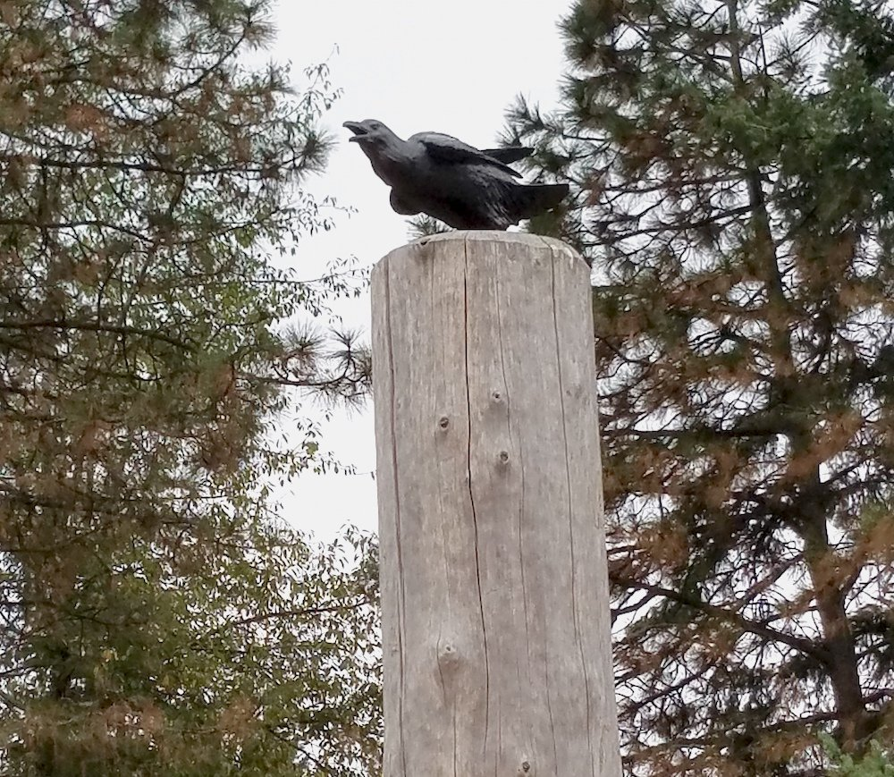

Nadaka Nature Park
Slider the Otter

Seeker the Raven
Plaque for the sculptures Seeker and Slider
From left to right: Gresham City Councillor David Widmark, Donor Joan Albertson, and Artist Rip Caswell.
These sculptures were made possible by the generous gift of Joan Albertson. She is a long time sponsor of the Nadaka Nature Park. Joan unveiled the Slider and Seeker sculptures on August 12th, 2017 with Rip and David.
Joan Albertson playing with Slider.
Lee Dayfield with Slider.
Vanessa Chambers and her grandchildren with Slider.
This is the great group of people who brought these two statues to Nadaka Nature Park!
Joan is quoted as saying in an article by Christopher Keizur, "This whole project could not have happened without everyone coming together."
Read more of the original article at:
http://portlandtribune.com/go/42-news/369214-251813-nadaka-unveils-nature-statues
Learn more about Nadaka Nature Park at: http://friendsofnadaka.org/
Location: 17615 N.E. Glisan Street, Portland, Oregon 97230
Artist: Rip and Chad Caswell
Rip gave a great quote in the above mentioned article, "It's an honor to have our art placed in a nature park... I think it's wonderful to bring more art into Gresham."
Rip and Chad worked together to bring these statues to Nadaka Nature Park. In another article by Keizur, Judy Han had this to say, "It is wonderful having artists like Rip here in the area... The sculptures he and his sons make are beautiful, and our community deserves these nice things."
Rip enjoys working with his sons and watching them progress. He is proud of every piece they make. "What draws people to the family's work is the emotion they impart onto their subjects. Every piece has a dynamism beneath the surface, looking as if the moments are in action. The trick, according to the artists, is having that same emotion while sculpting. 'If you feel the emotion yourself it will translate through you work,' Chad said."
Read more about Chad and Rip at:
http://www.pamplinmedia.com/go/42-news/370222-253164-family-sculpting